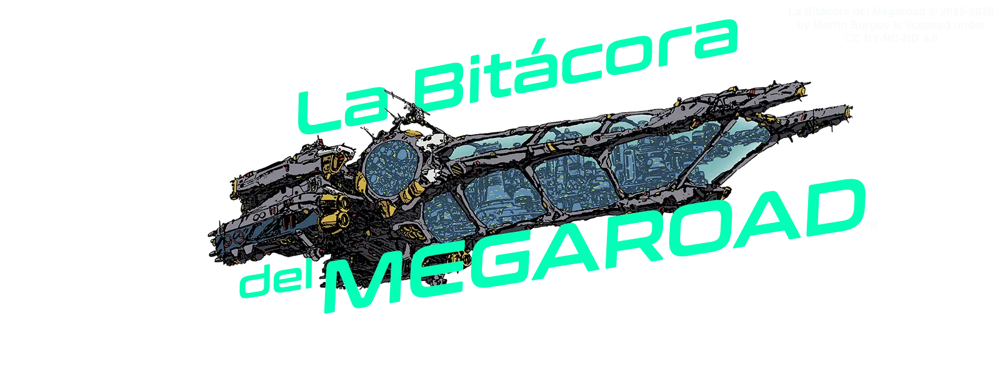

Una página dedicada al análisis y a la difusión del vasto universo de Macross (y Robotech).
Nuestro objetivo es promover la cultura, y el conocimiento derribando viejos mitos.
Cargando publicaciones…